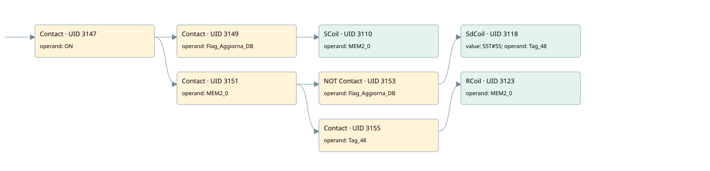

reset working hours after recording the data in the db
time work motor · 검색 색인 순서 54 · 원본 내부 NID 추정 57
백업 PLF 원본의 2909265 바이트 위치에서 복원한 XML. 검색 문서 1055의 객체 키 161022006612000000000000와 연결했다. 이름 해석 9/9개. 남은 RefId는 상수 또는 미해석 참조다.
연결 구조 다시 그리기
원본 Part/PCon/Wire를 이용한 연결도다. TIA 화면의 래더 배치 또는 실행 결과를 재현한 그림은 아니다. 핀 연결은 아래 표와 원본 XML을 기준으로 읽는다. 노드 위에 마우스를 두면 피연산자 이름을 볼 수 있다.

접점·코일·블록과 피연산자
| Part UID | Gate | Negated 핀 | 연결 피연산자 |
|---|---|---|---|
| 3147 | Contact | operand = ON | |
| 3149 | Contact | operand = Flag_Aggiorna_DB | |
| 3110 | SCoil | operand = MEM2_0 | |
| 3151 | Contact | operand = MEM2_0 | |
| 3153 | Contact | operand | operand = Flag_Aggiorna_DB |
| 3118 | SdCoil | value = S5T#5S; operand = Tag_48 | |
| 3155 | Contact | operand = Tag_48 | |
| 3123 | RCoil | operand = MEM2_0 |
접점 경로를 펼친 조건식
Contact·O/A·비교기의 원본 연결을 읽기 쉽게 펼친 보조 해석이다. POWER는 전원 레일 시작을 뜻한다. 호출 블록·에지·타이머의 내부 동작과 다중 쓰기 순서는 이 표로 실행 검증하지 않았다. 미해석 핀과 RefId는 원문 연결표에서 확인한다.
| UID | 동작 | 대상 | 원본 접점 경로 | 내용 |
|---|---|---|---|---|
| 3110 | SCoil | MEM2_0 | (ON AND Flag_Aggiorna_DB) | 조건 성립 시 Set |
| 3118 | SdCoil | Tag_48 | ((ON AND MEM2_0) AND NOT [Flag_Aggiorna_DB]) | 시간 동작 SdCoil; 타이머 의미 추가 확인 / 시간 인자 S5T#5S |
| 3123 | RCoil | MEM2_0 | ((ON AND MEM2_0) AND Tag_48) | 조건 성립 시 Reset |
원본 배선 연결
| Wire UID | 동일 Wire 연결 끝점 |
|---|---|
| 3157 | Powerrail {} ↔ Part 3147.in |
| 3133 | ORef 3124 (ON) ↔ Part 3147.operand |
| 3148 | Part 3147.out ↔ Part 3149.in ↔ Part 3151.in |
| 3134 | ORef 3125 (Flag_Aggiorna_DB) ↔ Part 3149.operand |
| 3150 | Part 3149.out ↔ Part 3110.in |
| 3136 | ORef 3126 (MEM2_0) ↔ Part 3110.operand |
| 3137 | ORef 3127 (MEM2_0) ↔ Part 3151.operand |
| 3152 | Part 3151.out ↔ Part 3153.in ↔ Part 3155.in |
| 3139 | ORef 3129 (Flag_Aggiorna_DB) ↔ Part 3153.operand |
| 3154 | Part 3153.out ↔ Part 3118.in |
| 3138 | ORef 3128 (S5T#5S) ↔ Part 3118.value |
| 3141 | ORef 3130 (Tag_48) ↔ Part 3118.operand |
| 3142 | ORef 3131 (Tag_48) ↔ Part 3155.operand |
| 3156 | Part 3155.out ↔ Part 3123.in |
| 3144 | ORef 3132 (MEM2_0) ↔ Part 3123.operand |
식별자 해석 근거 9개
| ORef UID | RefId | 이름 | IdentXmlPart 파일 | 해석 방법 |
|---|---|---|---|---|
| 3124 | 331 | ON | 0613-IdentXmlPart.xml | UID/RID + search-text + NID agreement |
| 3125 | 13 | Flag_Aggiorna_DB | 0613-IdentXmlPart.xml | UID/RID + search-text + NID agreement |
| 3126 | 332 | MEM2_0 | 0613-IdentXmlPart.xml | UID/RID + search-text + NID agreement |
| 3127 | 332 | MEM2_0 | 0613-IdentXmlPart.xml | UID/RID + search-text + NID agreement |
| 3129 | 13 | Flag_Aggiorna_DB | 0613-IdentXmlPart.xml | UID/RID + search-text + NID agreement |
| 3130 | 284 | Tag_48 | 0613-IdentXmlPart.xml | UID/RID + search-text + NID agreement |
| 3128 | 334 | S5T#5S | 0616-IdentXmlPart.xml | literal candidate: UID/RID/NID + nearby named declarations + search-text agreement |
| 3131 | 284 | Tag_48 | 0613-IdentXmlPart.xml | UID/RID + search-text + NID agreement |
| 3132 | 332 | MEM2_0 | 0613-IdentXmlPart.xml | UID/RID + search-text + NID agreement |
검색 코드 보조 자료
참조 명칭을 찾기 위한 자료이며 실행 순서나 AND/OR 관계는 위 연결표로 확인한다.
"on" "flag_aggiorna_db" "mem2_0" "mem2_0" "flag_aggiorna_db" "tag_48" s5t#5s "tag_48" "mem2_0"